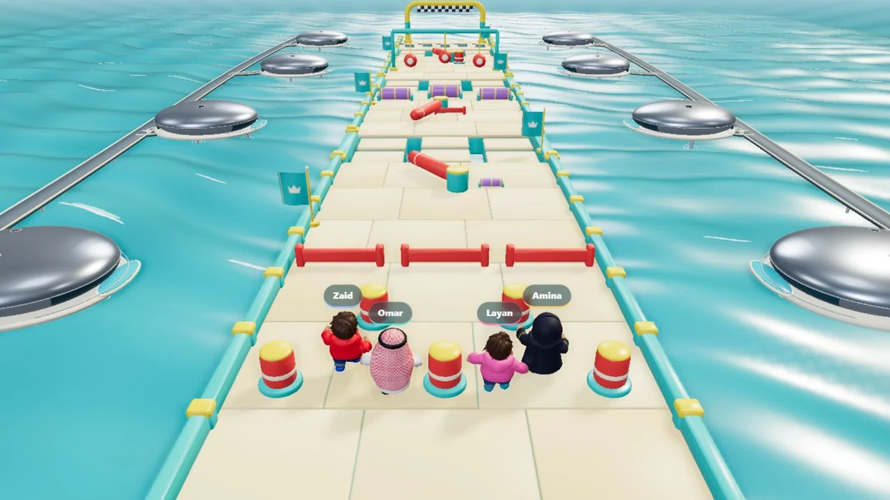
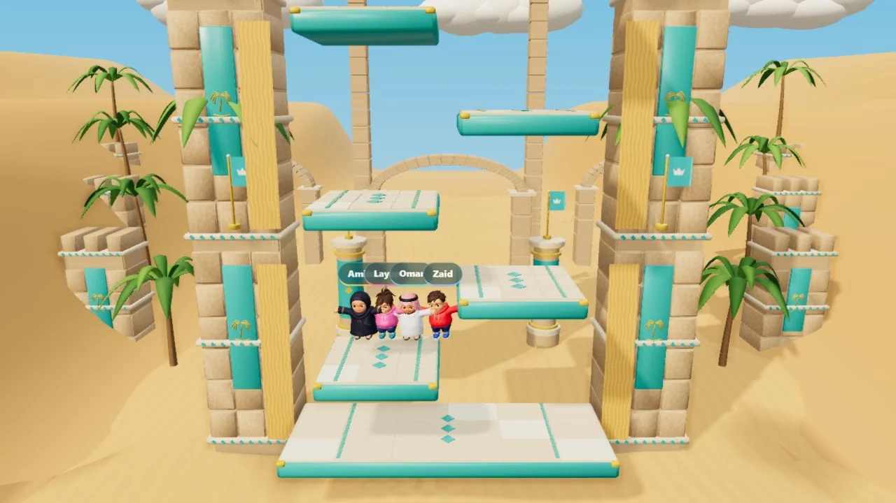
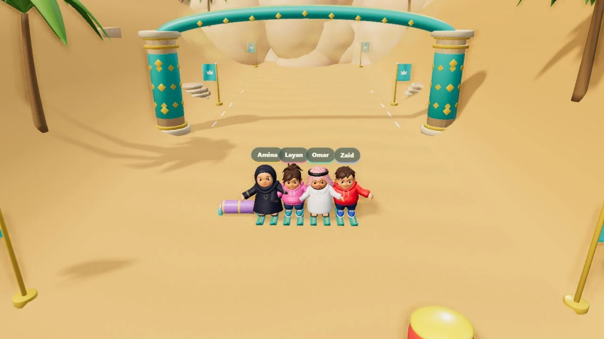
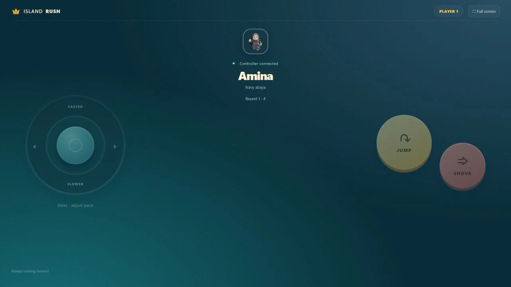
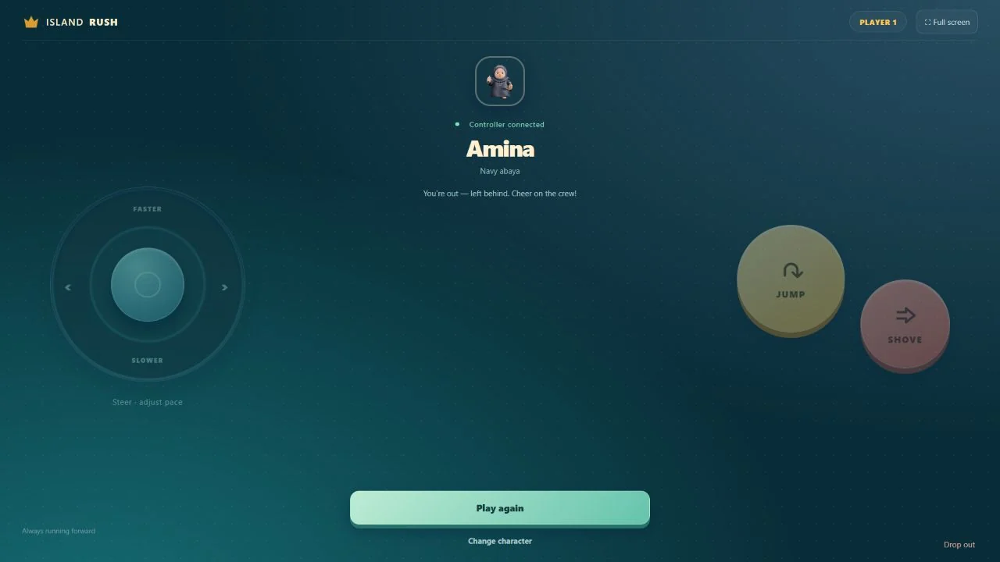
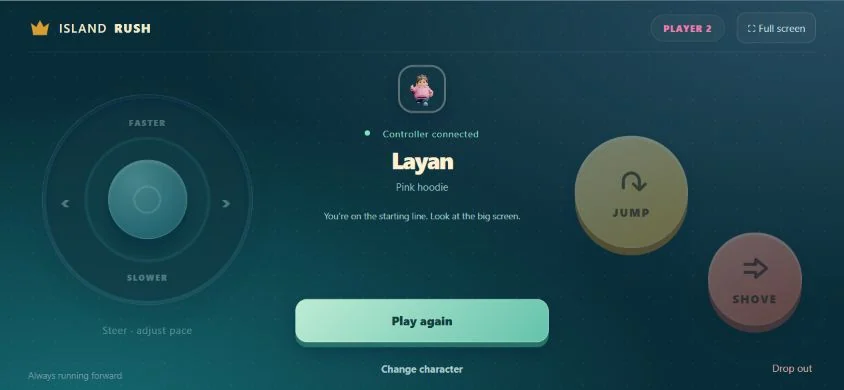
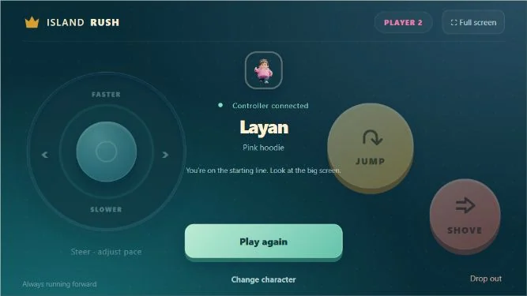

Four environments, one cast
Red Sea Rush follows a floating obstacle course. Quicksand Escape moves upward through desert platforms. Sandski Rush opens onto dunes, while Honeycomb concentrates the action in a circular tile arena.
Four worlds to play. One phone to take control.
Explore the story
Keep the world readable on a shared display while giving each player a clear, compact set of controls on their own phone.
Island Rush brings together four distinct 3D play spaces, personal phone controllers and a stylized character cast. This case follows the experience in three parts: the game environments, the controller states and a running animation preview.
Separate the spectacle from the controls: the shared screen holds the course and named characters; the phone keeps identity, steering, jump, shove and session actions close at hand. A common turquoise-and-gold palette connects the water course, desert climb, ski run and honeycomb arena.
Red Sea Rush follows a floating obstacle course. Quicksand Escape moves upward through desert platforms. Sandski Rush opens onto dunes, while Honeycomb concentrates the action in a circular tile arena.
Portraits, names and player numbers establish identity. A left-hand steering surface balances the larger jump and shove actions on the right; readiness and repeat-play prompts sit below.
A five-character running loop shows the cast in motion, including blinking and movement in clothing and hair. The gameplay captures use four of those character designs.
The selected 30 October 2026 collection: four gameplay screenshots, five controller previews and one looping character animation. Each section explains what is shown.
10 / PROJECT IMAGES
Select a view to explore.
One actual game capture for each level: Red Sea Rush, Quicksand Escape, Sandski Rush and Honeycomb. The four named characters stay visible within each environment.
Four named characters line up on a floating obstacle course, with barriers, rotating hazards and a checkered finish over turquoise water.
A vertical course stacks turquoise platforms between desert towers, keeping the four characters and the climb visible together.

The four-character lineup wears skis at the start of a dune course, framed by palms and a turquoise gateway.

An overhead view reveals a circular field of hexagonal tiles, with four named characters spaced around its edge.
Earlier controller previews show the ready, countdown and repeat-play states. They explain the control layout and player identity separately from the gameplay captures.
Amina’s landscape controller places steering on the left, jump and shove on the right, and the ready action below her identity.
The controller retains Amina’s portrait and the control layout while the center displays the round and countdown status.

A wider controller preview shows Amina’s out-of-round message with Play again, Change character and Drop out actions.

The same landscape layout presents Layan’s pink-hoodie identity and the Play again action.

A smaller phone-width preview keeps the character identity, steering, jump, shove and repeat-play controls together.

The supplied running GIF shows five characters, with blinking and secondary movement in clothing and hair. This animation study complements the four-character gameplay captures.
A looping five-character run preview shows changing poses, blinking and secondary cloth and hair movement.
Structure, interaction and visual decisions that give the work its character.
RoleThis case brings together the selected Island Rush gameplay, controller and animation material. Specific base-character, rig, animation and implementation credits remain separate; the presentation does not claim that every source asset was created from scratch.
AssetsThe supplied gameplay screenshots and phone-controller previews are reproduced unchanged. The original 72-frame running GIF is retained with its animation intact. Character assets and implementation contributions retain their separate source credits; this page does not infer sole authorship from the files.
StatusLocal game captures dated 30 October 2026, earlier controller design previews and an existing running animation. No live venue deployment or performance result is claimed.